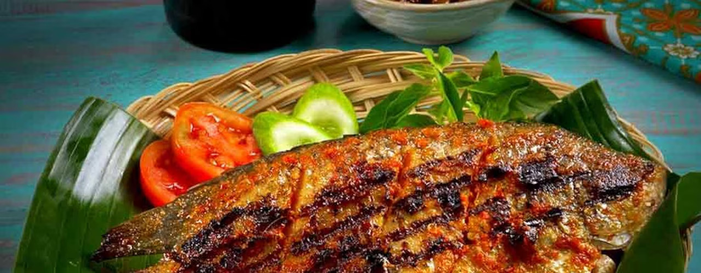

Gurame Bakar

Olahan gurame bakar selalu jadi favorit banyak orang karena dagingnya lembut dan gurih. Ya, selain digoreng, olahan ikan gurame lainnya yang populer adalah dengan dipanggang dan dilengkapi sambal kecap
Bahan-bahan
- 2 ekor ikan gurame, bersihkan, kerat kedua sisi
- 2 sdt air perasan jeruk nipis
- 1 sdt garam
- 1 sdm air larutan asam jawa
- 5 sdm Bango kecap manis
- 3 sdm minyak, untuk menumis
Bumbu Halus
- 6 butir bawang merah
- 3 siung bawang putih
- 4 buah cabai merah kering
- 3 buah cabai merah besar
- 2 cm jahe
- 2 sdt ketumbar butir
- 1 sdt garam
Baham sambal kecap, aduk rata
- 5 sdm Bango kecap manis
- 1 buah tomat, buang biji, potong dadu kecil
- 5 buah cabai rawit merah, iris tipis
- 2 butir bawang merah, iris halus
- 5 buah cabai rawit hijau, iris tipis
- 1/2 sdt air perasan jeruk nipis
Cara memasak
- Lumuri ikan gurame dengan air perasan jeruk nipis dan garam. Diamkan selama 15 menit
- Panaskan minyak, tumis bumbu halus hingga harum
- Masukkan air larutan asam jawa, aduk rata, angkat
- Tambahkan Bango kecap manis, aduk rata
- Oles ikan dengan bumbu halus yang telah ditumis
- Panaskan wajan, panggang ikan sambil dioles bumbu
- Panggang hingga kedua sisi matang merata
- Sajikan dengan sambal kecap